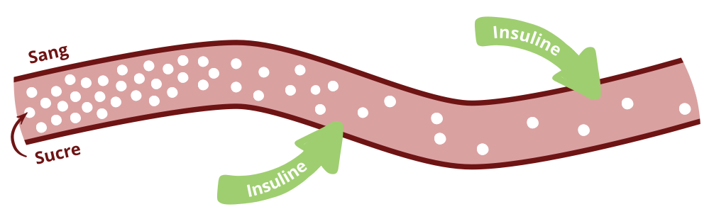
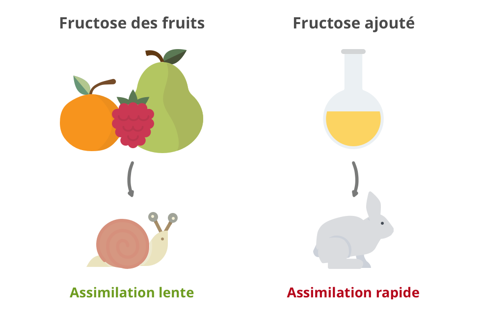
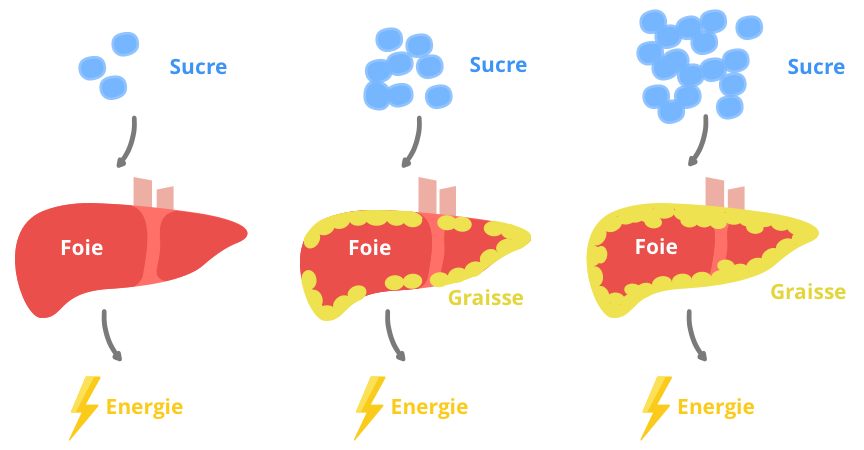

Aujourd’hui, la consommation de sucre recommandée par jour est de 25 grammes ce qui représente 5 cuillères à café. En réalité nous en consommons en moyenne 100g, soit près de 20 cuillères à café ! Mais pourquoi est-ce si mauvais? Quels en sont les effets sur la santé ? Le nutritionniste Anthony Berthou du blog La santé par la Nutrition nous a aidé à y voir plus clair.
Glucides et sucres : quelles différences ?
Les glucides, aussi appelés sucres, servent de carburant au corps. Ils permettent d’apporter à toutes les cellules du corps, via le sang, une source d’énergie rapide. Ils sont indispensables au fonctionnement des muscles et du cerveau dans la plupart des situations et permettent de remplir des réserves d’énergie disponible immédiatement dans le foie et les muscles.
Il existe deux grands types de glucides, ou sucres : les glucides simples et les glucides complexes.
- Les glucides simples sont ce qu’on appelle généralement « le sucre » au singulier. Ce sont les sucres qui ont une saveur sucrée et que l’on retrouve dans le sucre de table, les produits laitiers, les fruits, ou encore les biscuits et friandises.
- Les glucides complexes sont composés de plusieurs sucres simples accrochés les uns aux autres. Ils ont une saveur non sucrée et on les trouve essentiellement dans le pain, les pâtes, le riz, les céréales et les légumes secs.
Les sucres rapides, qu’ils soient simples ou complexes, sont ceux qui posent le plus problème aujourd’hui (voir notre article sur les glucides). Les sucres rapides ont un index glycémique (IG) élevé : ils sont assimilés immédiatement par l’organisme et font augmenter rapidement le taux de sucre dans le sang (aussi appelé glycémie). En réponse à cette montée du taux de sucre dans le sang, notre organisme va alors sécréter de l’insuline afin de réguler notre glycémie. Plus l’aliment a un index glycémique élevé, plus il fait monter rapidement le taux de sucre dans le sang, et plus notre organisme doit sécréter d’insuline.

Le fructose : un sucre très problématique
Il existe différents types de sucres, les 3 principaux étant les suivants :
- Le glucose : il s’agit d’un sucre naturel présent dans la plupart des glucides alimentaires, notamment dans les glucides complexes et les fruits dans des proportions variables. Il a un pouvoir sucrant faible.
- Le fructose : il s’agit du sucre présent naturellement dans les fruits et le miel. Il a un pouvoir sucrant élevé.
- Le saccharose : c’est le sucre de table, extrait de la betterave ou de la canne à sucre. Il est constitué d’une molécule de glucose liée à une molécule de fructose.
Lorsque l’on consomme du glucose, ce dernier est utilisé de manière efficace par notre organisme : il va pouvoir fournir de l’énergie à l’ensemble de nos cellules (foie, muscles, cerveau, etc.). A l’inverse, le fructose ne peut être métabolisé que par le foie : seules les cellules du foie sont capables d’utiliser le fructose comme énergie.
Lorsque le glucose et le fructose se retrouvent en excès dans notre organisme par rapport à nos besoins en énergie, ils vont alors être transformés et stockés pour être utilisés plus tard comme une source d’énergie disponible rapidement et facilement. Cependant, cette capacité de stock d’énergie est limitée : lorsque qu’elle arrive à saturation, notre organisme va alors stocker l’excès de sucres sous forme de … graisses ! Or, le fructose ne pouvant être utilisé que par le foie, il va donc être plus rapidement transformé en graisses car les besoins en énergie de notre foie sont limités.
On a tendance à penser que le fructose est un bon sucre lié au fait qu’on le trouve naturellement dans les fruits. Lorsque l’on consomme un fruit, on consomme du fructose accompagné de fibres et de nutriments qui ralentissent l’absorption et laissent le temps au foie d’utiliser l’énergie. Sous cette forme et consommé en quantité raisonnable, le fructose ne pose donc pas de problème à l’organisme.

Le problème vient du fait que, en raison de son fort pouvoir sucrant, de son faible prix et de ses propriétés technologiques intéressantes, les industriels extraient ce fructose très concentré (essentiellement du maïs) pour le rajouter dans de nombreux produits : on le retrouve souvent sous le nom de « sirop de glucose-fructose » dans la liste des ingrédients. Ces sucres sont rajoutés y compris dans des produits qui n’en n’auraient pas besoin (sauces, chips, pizzas, jambon, etc…) : c’est ce qu’on appelle les sucres cachés. Ce fructose ajouté n’étant pas accompagné des fibres et nutriments des fruits, son absorption va être très rapide et le foie va devoir l’utiliser immédiatement comme énergie… ou le stocker !
Des effets désastreux sur la santé
Cette surconsommation de sucre engendrent différents problèmes de santé.
- Syndrôme du « foie gras »
Le premier problème d’une consommation excessive de sucre, et en particulier de fructose, est l’apparition du syndrome du foie gras. Lorsque le sucre est transformé en graisse par notre foie, une partie de cette graisse va rester dans le foie, d’où le nom de « foie gras ». Ce foie gras peut être à l’origine de fatigue, de nausées et d’inconfort au niveau de l’abdomen. Mais surtout, il augmente les risques diabète et peut à long terme déclencher une cirrhose du foie (stéatose).

- Baisse de la sensibilité à l’insuline
Quand on ingère beaucoup de sucres, le corps libère de l’insuline pour réguler le taux de sucre dans le sang. Mais, lorsque notre corps sécrète trop fréquemment de l’insuline, nos cellules peuvent cesser de répondre efficacement et elles deviennent alors « résistantes » à l’insuline. En conséquence, notre corps produit alors encore plus d’insuline, et nos cellules deviennent de plus en plus résistantes : notre taux de sucre dans le sang n’est alors plus régulé correctement. Ces niveaux élevés d’insuline et de sucre dans le sang peuvent conduire au diabète de type 2 et à d’autres problèmes de santé.
Même si le fructose est un sucre à indice glycémique faible générant peu d’insuline, la consommation de fructose va favoriser cette insulino-résistance car le fait le que le foie soit gras le rend moins sensible à l’insuline.
- Accumulation de graisse viscérale
Une partie de la graisse issue de la consommation de sucre reste dans le foie. L’autre partie va quant à elle se retrouver dans le système sanguin et être stockée dans nos cellules graisseuses, ce qui va engendrer une prise de gras essentiellement au niveau du ventre. C’est la graisse viscérale, qui va enserrer tous les organes. Cette graisse viscérale en excès augmente les risques de diabète et de maladies cardiovasculaires.
- Dépendance
La saveur sucrée est la seule pour laquelle l’enfant a une attirance innée dès l’enfance. On comprend alors la difficulté à s’en détacher. Le sucre (on parle ici des sucres simples) active dans notre cerveau le circuit de récompense, qui va nous pousser à recommencer l’expérience. Par ailleurs, comme nous l’avons vu, après avoir mangé une grosse quantité de sucre, le taux dans le sang va augmenter très rapidement. Mais il va aussi très rapidement diminuer sous l’effet de l’insuline. Ce pic va générer un signal qui va être envoyé au cerveau pour le prévenir qu’il n’y a plus suffisamment de sucre dans le corps. Nous allons donc ressentir à nouveau le besoin de consommer du sucre.

Certains industriels sont bien au courant des processus de récompense activés lorsque le consommateur ingère du sucre. La plupart ajoute des sucres cachés : « sirop de glucose-fructose », « sirop de fructose-glucose », « isoglucose », « sirop de maïs à haute teneur en fructose », « sucre inverti », « maltose », « dextrose », « sirop de glucose », « dextrine », « maltodextrine », pour que les consommateurs aient envie d’en manger plus fréquemment, en plus grosse quantité et deviennent dépendants de leurs produits. C’est pourquoi l’enjeu principal est de réussir à se déshabituer du goût du sucre.

I like the helpful information you provide to your
articles. I will bookmark your blog and take a look at once more right
here frequently. I am rather sure I’ll be told many new stuff right
right here! Good luck for the next!
bonjour
que doit on penser de la stévia qui serait très peu calorique?
Bonjour, c’est encore René ; j’ai lu votre blog, toutefois selon ma modeste opinion, vous pourriez aller plus loin dans les explications à donner aux consommateurs (en général, malheureusement sous informés). Vous pourriez par exemple préciser les conséquences catastrophiques du sucre blanc – donc le sucre raffiné – sur les organismes : le ph qui devient acide avec la solidité des os diminue, eh oui l’es substance minérales qui constituent le squelette humain sont petit à petit rongées par l’acidité des organismes gavés de sucre blanc cela s’appelle l’ostéoporose – chose qu’en général la plupart des consommateurs ignorent – le sucre blanc se transforme en acide dans l’organisme et ronge tout ce qui est minéral : les os et les dents.
Et un organisme acide est propice au développement des cancers. C’est aussi une chose qu’ignorent la plupart des gens. Bon, je crois que j’ai à peu près tout dit. Bonne soirée à vous et bravo pour votre travail.
ADDICT AU SUCRE, donnez moi la recette miracle pour diminuer
L’application Blomy dit que le sucre style Erstein est médiocre car trop sucré …. comment peut on être sur du sérieux de l’application ?
Bonjour,
A partir de quelle quantité de fruits le fructose contenu devient il dangereux pour l’organisme si par ailleurs on ne consomme pas de produits avec sucres ajoutés ?
Bonjour
Réponse :
au sujet de la question sur le fructose dans les fruits du 21/06/2019 :
le conseil qu’on peut donner à tout le monde c’est de manger un peu de tout mais sans excès
car c’est l’excès de tout aliment qui nous conduit à la pathologie
donc nous sommes ce que nous mangeons
par ailleurs je vous transmet ma citation : le corps répond à nos erreurs !!! presque pour toutes les pathologies .
Notre nouveau mode vie qui nous a affecté notre santé
je viens de m’inscrire sur votre site car je démarre un diabète de type 2 et mon médecin me dit que je peux renverser la tendance en étudiant mieux ma nourriture et les apports en sucre . Jespère que grâce à votre site je vais y arriver merci d’avance
Bravo pour vos articles très clairs qui nous permettent de mieux nous alimenter, à nous de jouer maintenant
Bonsoir,
Merci pour vos informations, c’est un article très intéressant! J’ai cependant quelques questions. Certains industriels remplacent le sucre par le maltitol. Y a t-il des conséquences pour notre organisme ? Est-il préférable de manger ( avec modération ) un aliment sucré plutôt qu’un aliment contenant du maltitol ?
En vous remerciant à l’avance de votre réponse,
Bonne soirée! ☺️
Et comment fait on pour se deshabituer du sucre quand on y est addict depuis très longtemps
L’addiction au sucre est très forte mais elle est également très rapidement amoindrie par une abstinence totale de sucreries durant une à deux semaines.
Le fructose n’est pas extrait du mais… il est fabriqué à partir du mais, nuance! C’est une fabrication industrielle.
Le fructose passe incontestablement par le foie, mais il est maintenant remis en question qu’il ne soit « brûlé » que par le foie.
Son plus gros problème est qu’il est plus cariogène que le glucose.
L’IG ne sert à rien, l’IG de base d’un aliment est modifié par la consommation de gras et de fibre et meme de proteines!
Bravo l’équipe pour cette appli très pratique pour moi qui suis diabétique de type 2…
Merci
Bravo pour cette information capitale!
Coïncidence, J’ai pris conscience de ce problème du sucre il y a peu de temps, et j’ai immédiatement adopté un régime cétogène (hypotoxique). Celà fait maintenant 5 semaines.
J’ai bien entendu perdu du poids assez vite, mais je me sens mieux, je dors mieux, je n’ai plus les coups de barre classique et je n’ai plus sommeil après manger.
Cordialement
Super article, très clair, sur un sujet complexe. Je suis actuellement un protocole particulier pour identifier les sources de mes intolérances (protocole FODMAP), et je suis visiblement extrêmement intolérante au fructose, ce qui me crée des gros désordres digestifs, et des crises d’hypoglycémie sévères. J’ai déjà beaucoup lu sur le sujet, mais votre article m’a enfin fait comprendre des notions qui étaient restées obscures pour moi ! Merci !
Merci Julie, voici un lien vers d’autres danger à consommer du sucre sans modération
Le sucre un ennemi également pour notre cerveau !
https://jpr-reiki.jimdo.com/2014/03/29/le-sucre-et-notre-comportement/
très intéressant , mais la majorité des produit contient des addictif vraiment , j’ai écris tout cela pour lutter et protéger notre santé . Et encore merci d’avoir regarder mon site n’hésite pas à continuer
j’en ai beaucoup . Et juste un e chose comment tu trouver mon site .
Bon , au revoir
dommage que vous confondiez sucre lent et IG bas…
Bonjour, Pourquoi vous dites çà ? confondiez sucre lent et IG bas ?
Merci pour cet article très clair et pertinent par rapport à notre société de consommation (souvent mauvaise). Egalement un grand coup de chapeau pour votre application YUKA, découverte récemment, que j’utilise tous les jours et que je conseille à tous ceux et celles que je cotoie.
Après en avoir discuté avec mon médecin comme quoi je n’arrivais pas à maigrir (j’étais à 103 khs il y a 8 mois), il m’a dit tout simplement l’énnemi c’est le sucre qui fixe la graisse dans le corps. Puis il m’a édité une liste des aliments courants avec leurs indices glycémiques. Du jour au lendemain j’ai cessé totalement le sucre en morceau et le sucre en poudre et quelques aliments à fort indice glycémique comme le pain, les pommes de terre etc. En 8 mois j’ai perdu 10 kgs…
Bravo!
Votre médecin est formidable. Ils ne sont malheureusement pas tous aussi ouverts d’esprit.
Gardez le précisuesement.
De mon côté, j’ai opté seul pour la suppression de tous les sucres, un peu comme vous, et j’ai même tenté un jene hydrique de quelques jours.
Résultat : en 5 semaines environ, je suis passé de 90.6 à 83.3 kg. Et je n’ai pas fini. En parallèle, je saute le petit déjeuner, ce qui est assez facile pour moi. Par contre, j’ai du mal a passer en mode cétogène, mais je maigris quand même!
Mon expérience (un peu râtée) du jeûne est relatée sur ce forum :
http://jeune-et-sante.forumcanada.org/t1801-mon-premier-jeune-hydrique-qui-s-est-mal-passe#13167
Comment pouvez vous dire que l’apport journalier est de 25g de sucre alors que sur l’application un produit avec moins de 18g de sucre reste en « vert » alors que ce serait déjà plus de la moitié de notre besoin recommandé ?
J’ai la même question. Un yaourt de 150g avec presque 18g de sucre est mis à « excellent ». Ça n’est pas logique. Merci de nous expliquer.
Ce sera alors le seul aliment sucré de votre journée et vous serez en dessous des 25g par jour 🙂
Bonjour,
je suis très étonnée des apports de sucres que vous donnez, 25g par jour
car dans l’INCO il est indiqué 90 g!!! (http://www.capinov.fr/etiquetage-des-aliments-reglement-1169-2011-inco.php)
Merci de votre retour sur ce sujet
Si je ne m’abuse, cette recommandation provient de l’OMS ! Les règles édictées par l’UE semblent bien en retard sur cette question …
Merci Florian pour cette réponse! Effectivement c’est l’OMS qui daterait de 2015 mais quelle gap entre la recommandation de l’Europe et celle du « Monde » !! Oui est-ce l’UE qui en retard ou l’OMS trop sévère …
et oui !
Les normes officielles protègent les intérêts économiques…
C’est comme pour les champs électromagnétiques : les normes sont aberrantes, et en France 100 fois plus permissives que dans d’autres pays…
Article intéressant mais je reste sur ma fin…. sur la question :C’est pourquoi l’enjeu principal est de réussir à se déshabituer du goût du sucre.j’aurais aimé des conseils sur la désacoutumance du sucre… Merci pour l’application !!
bonjour,
j’avoue que cette question est primordiale.
Moi aussi, j’ai énormément de mal à me désacoutûmer du goût sucré, que j’adore depuis 58 ans!
Cela fait 5 semaines que j’ai supprimé le sucre (maxi 50g par jour soit quelques carrés de chocoat noir à 80% après le déjeuner et le dîner). C’est très très dur!
J’ai découvert que le lait de coco (bio) qu’on trouve en rayon spécialisé, qui ne contient quasiment pas de sucre, laisse un petit arrière goût sucré en bouche. Idéal pour couper une petite envie de grignotage, ou même en fin de repas.
Bonjour, moi aussi j’ai du mal à ne plus manger du sucre en tout cas j’ai bien diminué. Mais j’ai juste besoin de finir mon repas avec un un petit carré de chocolat noir 70% de cacao. c’est le seul sucre en confiserie que je mange. au fait à combien de sucre en gr avons nous le droit de manger , si quelqu’un peut ma répondre. Merci .
Bonjour,
L’hypnose permet de se débarrasser de l’addiction au sucre, j’en ai l’expérience, c’est mon métier…
Article très intéressant!! Mais j’aurais aimé connaître les recommandations des nutritionnistes quant à la quantité de fruits raisonnable pour une journée et l’ équilibre à respecter avec les sucres lents tels que les pâtes par exemple!!!
Bonjour,
Je ne suis pas nutritionniste, mais de mon point de vue, seuls les fruits rouges (fraises et framboises en tête) sont acceptables dans le cadre d’un « régime » à faible teneur en sucre. C’est une difficulté qu’il faut contourner en prenant des vitamines ailleurs que dans les fruits (par exemple, la spiruline, le germe de blé, le pollen de fleur, le jus d’herbe de blé, qui sont plus des compléments alimentaires que de vrais aiments, même si leur pouvoir vitaminique est supérieur à celui des fruits.
Pour les sucres « lents », il ne sont pas meilleurs que les autres, et le mieux est supprimer les pâtes et le pain. Si c’est vraiment impossible, alors autant privilégier les pâtes complèes et le pain complet qui apportent au moins les nutriments contenus à l’état naturel dans le blé (nutriments qui sont détruits lors du « raffinage » de la farine);
Merci pour cette application géniale
Dommage qu’il n’y ai pas eu mention des Indices glycémiques !
Sinon bon article.
Article très intéressant, simple et efficace. Bravo !
Bravo pour votre article qui résume trés bien le probléme de la consommation de sucre!
Super article. Mon médecin m a parlé du sucre des industriels, mais là j ai tout compris. Brave et merci
Article super bien fait, synthétique et qui décrit bien les dangers du « Sucre » au quotidien….
Merci pour votre application!
Votre article sur le sucre est très bien expliqué!
Merci bcp
Bravo YUKA pour votre application adoptée par toute la famille et bravo aussi pour vos articles toujours bien documentés et intéressants.
A quand, pour chaque produit, outre la quantité de SUCRES, la quantité de GLUCIDES indispensable pour le calcul de la dose d’insuline à s’injecter pour nous les diabétiques insulinodépendants?
Merci
Très bon exposé ,apprendre que le sucre est surtout présent dans des cas ou il n’est pas nécessaire ,quel gâchis pour l
J’ai remplacé le sucre par le miel au p’tit dej et le café, je pensais que c’était le top mais d’après l’article c’est pas complétement inoffensif !
Tu peux essayer le sucre de coco, il a un IG très faible (et un goût particulier)
Oui, en effet, la noix de coco sous toutes ses formes est un produit exceptionnel :
– huile de coco
– lait de coco,
– sucre de coco
– crême de coco
– noix de coco fraîche ou sèchée
Très bon article et excellente application appréciée et utilisée par toute la famille !
Merci !
Merci pour cet article intéressant, et facile à comprendre et réexpliquer à son entourage.
Merci pour votre application Blomy,
et pour votre article sur le sucre très intéressant .
Très
Très bon article, bien détaillé et très compréhensible!!!
Moi je préfère le sirop d agave plutôt que le sucre oule sucre de canne. Est il meilleur pour la santé ?
Sirop d’agave pas bon j’ai commencer à en mettre dans les yaourts et café etc quand j’ai refait ma prise de sang tout les trois mois elle était pas bonne le gliker à 7.5 et avant j’étais 7 alors voilà .
Le sucre roux est il meilleur. Merci pour vos bons conseils.
Cet article est interressant et pédagogique. Merci pour ces explications très claires
super cet article
personnellement, je suis très prudente concernant les apports « sucre »,
je fais du sport
et je brule les calories
La stéatose et la cirrhose sont deux choses différentes. La première est le début de l’évolution graisseuse du foie qui est réversible, la deuxième est l’évolution finale irréversible.
Je savais pas que les Français prenez 5 cuillères à café de sucre moi j’en prends deux et pourtant j’ai toujours l’impression que c’est beaucoup trop par contre j’aurais aimé savoir si en prenant un ou deux morceaux de sucre c’est l’équivalent de 2 cuillères à café autrement j’ai aimé connaître tout ça c’est très intéressant et instructif
Très intéressant merci
article très intéressant, merci
Tres intéressant. J ai compris beaucoup de choses….
Merci
je suis diabétique de type 2 depuis plusieurs années . Je suis sous médicament en cachet et sous insuline en injection 1xjour à 24 u . J’ai beaucoup de mal avec les produits dépourvue de sucre . Existe t’il une liste simple de produits à proscrire totalement ou des taux à ne pas dépasser donc à ne pas acheter . Merci de votre réponse
Bonjour,
essayer le jeûne hydrique, sous accompagnement médical, ou encore le mode d’alimentation cétogène (toujours sous surveillance médicale).
Si vous êtes en France, ce ne sera pas forcément aisé de trouver un médecin ou un établissement médical qui acceptera de vous suivre.
Si vous n’êtes pas trop sûr, achetez un livre sur le jeûne (c’est assez en vogue en ce moment) et faites vous votre propre opinion.
Très intéressant, vais me renseigner sur comment nettoyer mon foie de tout le gras qu’il a dû stocker au fil du temps pendant ma période de consommation excessive de sucres…
J’espère lire d’autres billets aussi instructifs 🙂
Bonne continuation
moi qui suit diabetique votre article ma beaucoup plus.
J’espère en lire d’autres;
Votre article est trés simple et bien présenté et à la portée de tous
Très intéressant, il serais pas mal aussi que dans votre application il y ai un indice pour la glycémie de chaque aliment, ce qui permettrait de faire plus attention à notre charge glycémique sur certains articles que nous achetons ou l’on trouve régulièrement du sucre caché
Je suis moi même diabétique et je trouve votre idée géniale 🖒
très bon article
d’où le grand intérêt d’avoir l’application YUKA qui nous permet de tout vérifier sur les paquets devant les rayonnages des magasins ,merci pour cet article sur les sucres ,on y voit vraiment plus clair
merci pour votre site très interessant et merci pour cet article qui nous ouvre les yeux et nous dit de faire ses propres repas.
Très intéressant…
Je le partage.
Très bon article très intéressant bravo à tous
Très intéressant
Merci pour votre application ouvrons les yeux sur les produits néfastes à notre santé
Les industriels se fiche pas mal de notre santé. Ils rajoutent n importe quoi dans la nourriture. Tout cela pour faire plus de fric!!! Après ont nous fait culpabiliser lorsque nous sommes malade.
Merci pour cette application car nous ne pouvons pas faire confiance à nos hommes politiques dont le jugement est gangrené par des lobbyistes qui ne nous veulent pas que du bien.
Continuez comme cela en implémentant cette application avec le maximum de produits.
Un grand merci à vous.
Et tout cela est su, et aucun organisme officiel de la consommation et de la santé ne réagit.Que font nos politiques ???
Ce n’est pas en culpabilisant le consommateurs que nous avancerons.( il en est de m^me d’ailleurs pour le tri des déchets)
Nous n’avons pas accès au vrac par exemple alors qu’il devrait être généralisé.
Faut que les gent se réveille et qu’il sache que nos amis les industriel nous empoisonné sans état dames je me demande que font nos politique sont il complice ?
Merci à vous vous êtes formidable c’est grasse àdes personnes comme vous que petit à petit nous pourrons je l’espère ouvrir les yeux et prendre conscience que notre santé dépend entièrement de notre elimentation .
Article très intéressant
Message très clair !!! Merci pour cette information si VITALE
IL faut bannir tous les produits industriels qui ont une proportion énorme de sucres et de matières grasses et donc manger des aliments que l’on cuisine soi même
Article très intéressant comme d’habitude. Blomy est vraiment une super application je l’utilise continuellement
Merci ,bonne piqure de rappel…
Comme d’habitude, très instructif , et simplifié dans l’explication ce qui permet à tous de comprendre le processus !! Merci et à bientôt pour d’autres articles toujours intéressants !!😉👍
Articles et commentaires très très intéressants cela me fait prendre conscience qu’il me faut faire attention.
merci
Bonne synthèse : il ne faut pas oublier les sucres dits en chaîne comme l’amidon : pain riz pâtes : trio détonnant !!!
Pensez aussi à manger les fruits crus en dehors des repas : passage ds l’estomac en moins de 30 min comparé au tps nécessaire à un bol alimentaire pour un repas principal : > 1h30 à 3h00!!!
La grande erreur est de dire que le sucre est indispensable. En effet, en matière d’énergie quand nous ne consommons pas de sucre ce sont les graisses qui sont utilisées. Faire le distingo entre sucre rapide et lent est un faux problème. Le sucre quelque soit sa catégorie c’est du sucre et a ce titre il a les mêmes propriétés nocives. L’alimentation cétogène ou low-carb par exemple en sont la preuve flagrante. Les personnes qui adopte ces modes alimentaires n’ont pas moins d’énergie, bien au contraire. Le gros avantage c’est que pas de restriction dans le reste de l’alimentation pas de fringale, pas de manque et pas de frustration. Donc facile de perdurer dans le temps dans cette manière de s’alimenter. De plus il est facile de maigrir avec cet hygiène de vie et de rester à son poids de forme sans contrainte. Le sevrage au sucre ne demande que 2 à 3 semaines. L’état physique étant tellement plus agréable (disparition des douleurs entre autres) que l’on a plus envie de revenir en arrière. Le poids santé est par conséquent facile à conserver.
On parle du fructose comme nocif. Mais il est un composant essentiel dans le miel. En dépit de toutes les vertus que l’on donne au miel celui-ci est-il vraiment si bon pour la santé?
Merci. Ce serait bien intéressant de le savoir vraiment en effet !
info très intéressante. Néanmoins s’ il est clairement indiqué que 25 g de sucre par jour est suffisant. Comment définir la quantité de sucre assimilé par quelques fruits (2 oranges, 2 clémentines et une banane par exemple par jour) un peu de lentilles au repas…comment savoir quand on atteint approximativement les 25 g ???
Vous avez parfaitement raison, c’est difficile. Le mieux c’est de limiter le nombre de fruits tout simplement contrairement aux recommandations du ministère de la santé. Il faut aussi faire attention à tous ces plats préparés contenant du sucre pour nous rendre addicte au goût sucré. Faire soi-même ses plats c’est la solution.
Excellent article en attendant que l’industrie agroalimentaire cesse de nous empoisonner (je rêve bien sur).
Merci
Je vous suis parfaitement, mais cela risque de ne pas beaucoup bouger et mettre beaucoup de temps. Lobbies des industries qui nous manipulent pour nous faire avaler n’importe quoi, est leur gagne-pain sur des milliards comment pouvons nous penser qu’ils vont abandonner tout cela. Par contre, en prenant un peu plus de temps d’acheter les produits frais pour fabriquer nous même notre alimentation, nous ne dépensons pas plus et prenons rapidement plaisir à innover le contenu de notre assiette.
article très intéressant, même si dans les grandes lignes, tout le monde croit être informé, il semble primordial d’avoir des rappels du danger en termes clairs et compréhensibles.
Merci pour ‘la piqure de rappel’
Très bon article, comme toujours
Article très utiles et les explications très claires . Celui ci permettra de mieux gérer notre assimilation de sucre.
Je suis d’accord avec Jack, une piqûre de rappel ne fait pas de mal.
Merci pour cet article bien documenté et intéressant.
D’autant plus que je suis une accro au sucre (surtout le soir) et j’essaie de m’en débarrasser.
Rendez visite à un thérapeute en naturopathie il vous aidera et vous verrez que ce n’est pas si difficile de se faire des plaisirs sans sucre.
Information très importante pour la santé. Merci
Bonjour
Merci pour toutes ces précieuses informations…. Depuis que j’ai installée cette application, je passe beaucoup de temps pour faire mes courses je scanne pratiquement la totalité des produits et souvent des surprises!!!!!! Je ne peux plus m’en passer… merci
Très bon article. C’est la guerre contre le sucre.
J’avais lu un article comme quoi la dépendance du sucre était comme celle de la cocaïne
Oui cela peut s’assimiler à l’addiction aux drogues dans le processus de contamination par contre bonne nouvelle l’addiction disparaît sans difficulté ni effets secondaires en 2 à 3 semaines et bien sûr sans souffrance.
Enfin un article qui clarifie les effets nocifs des sucres sur la santé en général et surtout sur la prise de poids. Action de l’insuline, régulation de la glycémie, stockage des graisses.
Michel Montignac a dit cela il y a plus de 30 ans. la présence concomitante de glucides et de lipides dans le sang induit la sécrétion d’insuline et par conséquence, le stockage des graisses et la prise de poids. Lire: je mange donc je maigris. (Montignac)
Réalité que les nutritionnistes télévisuels ont longtemps combattus. mais qu’ils s’attribuent depuis peu!!
Très intéressant merci YUKA !!
Et le miel alors, à éviter ou non ?
Oui, le miel est du sucre, il est a consommer avec très très modération et à comptabiliser dans les 20 à 30 g journaliers.
Merci pour cet article tres intéressant les personnes doivent se réveiller et manger pour nourrir le corps et non etre asservie par le mental sur un besoin qui fait tres souvent parti d’une création mentale merci continuez à nous aider sur ce chemin bien amicalement Hervé
Bonjour,
Le Miel = oui ou non?!?!
Merci pour l’article.
Le miel oui si apiculteur n’a pas rajouté de sucre ce qui veut dire acheter don miel au bon endroit, qu’est ce qu’un bon endroit en tout cas pas le super marché bien à vous Hervé
C’est en marche – on est les colibris Et sommes des exemples vivants que ça marche
Je viens de répondre à ML oui le miel c’est du sucre.
Il faut acheter du miel avec les références Apiculteurs RÉCOLTANTS de sa région si possible – et banir les miels ( oui avec un S , c’est dire les mélanges !!!) d’origine UE
Informations extrêmement compréhensible et apporter de tout le monde merci beaucoup j’ai appris que le fructose et ses dérivés était dangereux alors que je pensais que c’était moins terrible que le glucose simple merci beaucoup je vais passer l’information à mes amis et famille
Bonjour
Super votre article!
Moi qui croyais que le fructose était bon quelque soit sa forme.
Merci et continuez à nous rendre critique quant aux industriels de l’agro-alimentaire.
Je vous remercie pour cette explication tres claire , et vois remercie également pour l’application très intéressante. Je l’utilise depuis que j’ai eu connaissance . Merci bcp
Merci pour cet article enrichissant qui nous rapelle que l´alimentation est plus qu’essentielle au bon fonctionnement de notre organisme
Merci pour cette explication simple et éclairante! C’est bien de tout cela que vous nous aidez à détecter sur les étiquettes ?!!?
Merci pour votre article très intéressant. J’avais déjà été alerté en lisant Toxic food. Un livre en anglais qui parle justement de ce sucre de glucose fructose. Merci aussi pour lrs différentes appellation de ce poison, je ne connaissais que sucre de glucose fructose et sucre inverti.
Bonjour
Merci pour cet article très intéressant car je mange sucré plutôt le soir il me faut essayer de manger moins sucré
Merci pour l’article très intéressant et nous rappeler que le sucre est mauvais pour la santé
Merci pour cet article intéressant.
Bravo
Excellente synthèse !
À quand une évaluation de l’index glycémique des aliments sur Blomy ?
Ça, ce serait vraiment top
Article très intéressant . Merci
Bonjour, je me suis desinscrite par erreur : votre mail m’a beaucoup intéressée et je voudrais continuer à le recevoir. Comment me réinscrire ?
Merciiiiii
Très intéressant et instructif. Merci pour cet article.
Merci pour cet article très intéressant.
Salut,
J’ai 48 ans, j’ai éliminé les sucres rafinés rapides de mon alimentation il y a environ 9 mois dans le cadre d’une pratique sportive régulière ancienne avec l’objectf d’optimiser la dépense énergétique.
J’utilise un peu de sucre complet et du sirop d’agave.
Je mise aussi sur les aliments complets (riz, pâtes, farine,…), sur le son de blé ou d’avoine, les fruits et légumes.
J’ai banni les préparations industrielles, pas ou peu de charcuterie mais je ne me prive de rien par ailleurs. J’essaie de diversifier au maximum mon alimentation.
Résultat : plus de petit bidon, 7 kg en moins et une très nette amélioration de mes capacités physiques.
Et en plus ça n’edt pas si dur que ça.
Essayez vous verrez !
Bravo pour ce que vous avez fait ammeliorez l’ensemble avec des jus de légumes par extraction lente =pdf Norman Walker. Sûr le net bonne recherche moi je fais c’est génial les bien fait j’ai 60 ans 6 h de sport par semaine en pleine forme cordialement Hervé
Je vais vous décevoir, le riz blanc, les pâtes et en général tout ce qui contient du blé, de l’avoine,… c’est du sucre. Vous êtes sportif et vous devez connaître sans doute l’état cétonique que recherche beaucoup de sportifs de haut niveau qui leur permet d’obtenir une résistance à l’effort ainsi que des performances accrues ? Le sucre se cache dans beaucoup d’autres aliments que dans le sucre à proprement dit.
Bonjour
J ai découvert après 40 ans de migraine qu un régime sans sucre très stricte m amenait une réelle amélioration
J ai mis 1 an à être sevree comp’letement ( aucun soda aucune pâtisserie bonbon produits industriels etc …) et grâce à Blomy récemment qui m’a simplifié cettte démarche
C est très difficile de convaincre ses amis ses patientes de tenter cete « aventure » mais les bénéfices sont bien réels
Ce qui reste difficile ce sont les repas à l’extérieur que je digère de manière générale très mal même si peu de sucre a priori …
Merci pour votre application et cette article très Claire dont je vais me servir encore et encore pour parler de cette réforme alimentaire
Merci
J’en suis la preuve vivante 😂! pendant plusieurs années je ne faisais pas attention,puis un jour on le découvre durant une analyse de sang plusieurs anomalies,ce qui a entraîné une échographie qui a révélé la maladie de foie gras,depuis un an je me suis repris en main,plus de sucre ajouté,de mauvais sucre,reprise du sport,je mange sainement,et bilan de courses tout est revenu normal,des sacrifices qui m’ont permis de retrouver un équilibre normal,par contre le régime sans sucre est très dur les trois premiers mois,à la clé j’ai perdu 15kg.je confirme que le sucre est une drogue et que seul la volonté ou plutôt le mentale peut vaincre cette dépendance!et vous où en êtes-vous ?
C’est bien pour cela qu’il faut se faire aider pour que cela ne soit pas difficile. La suppression du sucre n’est pas la privation de tout plaisir à table bien au contraire. Quand on se fait plaisir en sachant que l’on fait pas de tort à santé c’est vraiment le nirvana pas de culpabilité « juste la joie de se régaler ».
bonsoir, j’ai trouvé l’article intéressant et j’adore l’apli je m’en sers tout le temps et j’en tiens compte ce qui m’a permis de me rendre compte que je croyais certains aliments sains et j’ai eu de mauvaises surprises, merci beaucoup
À savoir que les sucres complexes comme la patate ou le pain blanc ont une assimilation très rapide. Raisonner sucre simple/rapide et assimilation rapide/simple est faux, pour ça il y a l’index glycémique. Une pomme à un IG de 35-40 mais sucre rapide, le pain blanc sucre complexe, mais IG de 95 !!!
J’aimerais revenir sur « Aujourd’hui, la consommation de sucre recommandée par jour est de 25 grammes ce qui représente 5 cuillères à café. », on parle bien de 25g de sucre ajouté/libre et non de sucre naturel !
Bonne article tout de même 😉 Bon weekend à vous
Je comprends pas bien le commentaire d’Eric qui dit que les pates sont des sucres rapides. Il est prouver que les sucres lents sont des molécules de glucoses associés à des chaines plus complexes. La digestion permet de liberer le glucose mais cela prend plus de temps d’où l’expression sucre lent. Les sportifs connaissent bien ca.
Autre point intéressant la cuisson. Elle casse ces chaines et fait ressortir le sucre (oignons carottes pâtes…) d’où la nécessite de manger ses pâtes Al dente (et complète aussi idéalement) car plus elles seront cuites et plus ces chaines seront cassées et donc les pates deviennent »sucrées ». Donc attention à ne pas trop cuire ses aliments.
Eh bien renseignez-vous, comme je l’ai dit, la découverte de l’IG démontre que les sucres lents sont une erreur.
Il y a suffisamment d’infos sur le net. Pire encore avec les pâtes car, comme vous dites, les pâtes cuites Al dente ne sont ni plus ni moins que du blé moderne, transformé, des calories vides de nutriments ( il a même été prouvé que l’emballage en carton avait plus de nutriments que les pâtes elles-mêmes), et super concentré en sucre parce qu’avant d’arriver dans les étales, ce sont des pâtes qui ont cuit au moins 3 fois à ultra haute température pour en faire un produit consommable que vous connaissez. Je ne vais pas jouer au scientifique ni citer de source, tant il y en a sur le net
Et pour info, comme je l’ai dit, j’ai fait l’expérience. Manger un plat de pâte me faisait avoir un taux de sucre affolant 1/2 heure après alors u’une tablette de chocolat au lait entière ne jouait pas sur mon indice glycérique. Ayant été pendant un temps à l’hôpital, j’ai pu tester ce point plusieurs fois.
Enfin, l’exemple d’un ami et d’un collègue, atteints tous deux du diabète de type 2, et ne s’en sortant pas malgré les conseils de leurs médecins. Je leur dit de faire l’inverse de ce que leur conseillent leurs médecins, à commencer par éliminer toute forme de blé, mais, patates, riz, et bien sur les plats transformés, les jus de fruits, et ils sont guéris aujourd’hui. Ils peuvent même se permettre de réintroduire le sucre, quelques desserts. Bien sur sans exagérer.
On peut me dire ce que l’on veut, moi c’est le résultat que je regarde.
Quid de la stevia ? Merci
Désolé mais c’est de la daube car fait industriellement renseignez vous cordialement Hervé
merci. dommage de ne pas parler du sucre non raffiné qui lui contient des fibres et du coup ne provoque pas ces pics d’insuline (de ce que j’ai lu). On a arreté le sucre blanc à la maison, diminué la consommation de sucre (non raffiné) au global.
Il y a aussi moultes études montrant un lien entre un pancréas stréssé et des problèmes d’humeurs voire de dépression. Aux USA un centre d’enfants (pour enfants violents) a basé son alimentation sur un indice glucémique bas après avoir compris qu’un des facteur commun (en moyenne) était la mal nutrition.
merci beaucoup en tout cas pour tous ces éléments éclairants.
C’est ce que les industriels ont inventé comme arguments pour vous maintenir dans ce besoin de goût sucré qui vous entretient dans l’addiction aux sucres (quelqu’ils soient) les édulcorants de toutes sorte sont à bannir ils sont tout autant nocifs.
Bonjour,
dans la rubrique qualités du produit est-il possible de faire apparaître la « Charge Glycémique » d’un aliment, je pense que cela pourrait être très utile pour les personnes souffrant de diabète.
tres bon article
bravo Julie pour cet article tres bien detaille.
Bel article ! 👌
Merci pour cet article. J’aime beaucoup ce que vous faites. D’où mes interventions, à prendre comme des contributions, avec beaucoup de respect pour le travail que vous partagez pour la santé de tous.
Je me demande si votre nutritionniste Anthony Berthou ne devrais pas se mettre à jour, si vous l’avez bien compris.
L’indice glycémique, découvert il y a environ 30 ans, viens justement démontrer que les sucres lents ou complexes diffusent tout aussi rapidement le sucre dans le sang que les sucres dits rapides.
Aujourd’hui, on ne parle plus de sucres simples ou complexes, mais d’indice glycémique, de charge glycérique et d’indice insulinique.
Autrement dit, la quantité de sucre dans le sang, la vitesse à laquelle il se retrouve dans le sang ( le sucre d’un jus de fruit ira plus rapidement dans le sang que si le fruit est consommé entier avec ses fibres ), et quelle quantité d’insuline va libérer le pancréas pour éliminer le sucre et le transformer en graisses pour pouvoir le stocker.
Ce n’est pas moi qui le dit, il y a suffisamment de recherches scientifiques à ce sujet.
Par contre, ce que je peux dire, pour m’être documenté et pour avoir fait maintes et maintes fois l’expérience, une simple prise du taux de sucre au bout du doigt après avoir consommé ce que vous appelez des « sucres complexes »,comme des pâtes, patates, du pain, et vous verrez par vous même que vous n’avez pas forcément besoin de citer des sources. Expérience facile et à la portée de tous.
C’est d’ailleurs ce qui m’étonne, un test aussi simple et malgré tout, on continue es débats sur les sucres simples et complexes.
Ainsi, tout ce qui vient du blé, à fortiori le blé moderne, le maïs, les patates, le riz, ce sont des quantités de sucre très élevées que nous ingérons. Nous ne sentons pas forcément le gout du sucre en bouche lorsque l’on consomme du pain, mais le corps, lui, le sait très bien.
Ces aliments deviennent encore plus néfastes lorsqu’ils sont cuits à haute température.
Ainsi, du pain blanc, des frites peuvent atteindre facilement un indice glycérique de 95 avec une charge toute aussi importante. Imaginez!
Il faut vraiment comprendre pourquoi le blé est une des principales causes de la plupart des maladies actuelles.
Idem pour ce que vous dites sur le glucose, le fructose et le saccharose, il faudrait vérifier vos infos, car vous semblez mélanger beaucoup de choses.
Ainsi, par exemple, un jus de fruit pressé fait maison, et le sucre que vous appelez fructose va aller plus rapidement dans le sang, et déclencher l’alarme pancréas.
D’ailleurs, en vous lisant, vous le dites dans un paragraphe, et le suivant vous semblez dire le contraire, je cites: « Même si le fructose est un sucre à indice glycémique faible générant peu d’insuline »
Faudrait savoir.
Donc non, le fructose n’a pas un indice glycérique faible. Au contraire, il est élevé. La seule chose et que s’il est consommé avec le fruit entier, comme vous le dites, ce sont les fibres, qui, en déclenchant la digestion, vont ralentir son absorption.
Enfin, vous parlez de saveur sucrée. Je viens de l’évoquer, c’est une erreur, même si c’est déjà un gros plus de le savoir et décider d’agir en conséquence.
J’explique;
Vous décidez de supprimer les desserts sucrés, les plats pré-cuisinés, industriels, etc…
Vous allez, pour compenser, manger du pain, des pâtes fait maison, du riz. Et vous pensez avoir fait un gros effort, ce qui est vrai.
Mais votre corps, qui est loin d’être stupide, se rend compte de ce que vous faites.
Mais en même temps, en mangeant du pain, des pâtes, des patates sautées ou frites, etc…, vous n’avez plus cette sensation de sucre, donc vous êtes content de l’effort.
Votre corps n’est pas stupide. Il sait trés bien ce que vous faites, et il a peur. Mais. En même temps, quand vous avalez un bout de pain, il ne va pas venir vous faire la morale puisque vous lui donnez exactement ce qu’il demande: la récompense par le sucre. Eh oui, vous lui donnez du sucre. Et vous tombez dans le piège du cerveau.
Il faut juste voir ce que font les gens quand ils arrivent dans un restaurant. Quelle est la première chose qu’ils mangent? Le pain qu’on vient de leur servir. Même sans rien, ils mangent une, deux, voir 3 tranches de pain.
Là, votre cerveau est content. Le restau, probablement la compagnie à la table qui peut être agréable, ET…… du sucre rapide. Croyez-moi, ce n’est pas à ce moment que le corps va venir vous embêter. D’ailleurs, une simple question pour les migraineux et autres maux de têtes très souvent causés par le sucre. Est-ce que vous avez mal à la tête, ou autre au moment où vous vous installez et commencez à grignoter le morceau de pain en attendant le plat?
Je ne crois pas.
Et vous non plus.
Je fais long, on pourrait en faire des pages, mais je vous donne juste des lignes, car moi aussi, aide les gens, les informer, m’intéresse.
Si vous saviez de quelles maladies je me suis sorti avec ces principes, vous seriez surpris.
Ah, pour finir. Il faut également savoir que l’être humain n’a pas besoin de sucre, de « glucose » pour vivre. Il peut s’en passer totalement. Le corps, l’organisme, sait parfaitement transformer les graisses stockées en énergie, donc en sucre, en fonction des besoins. Vous le dites vous-mêmes finalement.
Et si pas assez de graisses, le corps peut se servir dans les muscles, les protéines.
C’est d’ailleurs pour cela que les marathoniens sont maigres, malgré les quantités de sucres quels consomment, et c’est également chez eux que le tau d’AVC et ‘infarctus est élevé. Demandez-vous pourquoi.
Il y a des mots pour cela. Cétose, cétogène. Des fonctions naturelles qui disent précisément que le corps humain peut totalement se passer de glucides, sous condition de consommer de bonnes graisses ( noix, amandes, poissons, etc…).
très bel article intéressant vous avez l air de bien connaitre ce problème de sucres cachés
que conseilleriez vous pour perdre du poids ?
que l on privilégie certains féculents plutôt que d autres?
depuis quelques temps j ai adopté le pain complet il semble avoir un index glycemique plus bas
a la maison nous ne consommons pas de plats tout préparés
pas évident de se dessucrer
Quel est le rapport avec les migraineux qui n ont pas mal à la tête en mangeant leur pain
Une manière de dire qu en fait c est psychologique ???
Et pain complet bio ??
Merci Eric de vos précisions, je suis entièrement de votre avis. En tant que naturopathe je suis tout le temps en information et formation sur toutes les études qui sont faites sur les questions médicales de l’alimentation. Malheureusement ces études ne sont pas diffusées en France, le gouvernement subit des pressions de l’industrie alimentaire qui bloque tout cela. Pour se former il faut avoir recours, aux pays anglo-saxons à la Suisse et même l’Allemagne. Les français sont très mal informés, je suis désespérée quand je vois les rayons des sucreries et que les maman font des achats inconsidérés. Les mamans pensent faire plaisir à leurs enfants en réalité elles commencent l’intoxication et la mauvaise santé des adultes de demain.
Pour ceux qui pensent que tout ce qui est dit ici n’est pas vérifié parce qu’en France personne n’a le courage d’en parler, je les invite à lire la traduction du livre « Ces glucides qui menacent notre cerveau » du DR David Perlmutter, il fait un peu plus de 400 pages mais la lecture est passionnante pour peu que votre santé et celles de vos proches vous préoccupe vous le trouverez passionnant.
C’est un source très éclairée qui vous en apprendra beaucoup. Bonne lecture.
Cette article etait vraiment génial !! Je félicite toute l’équipe de Blomy.
Bon article. Diabétique de type 2, depuis 20 ans, un infarctus, ces conseils n’ont pas de secrets pour moi. Je les applique très sérieusement, et je fais du sport… Suivez les, et en même temps, réduisez les graisses animales saturées, car l’un va avec l’autre. Le problème, c’est qu’on vous dit que tout est mauvais, pollué, » pesticidés », même le bio présente des failles! Parfois, c’est un vrai casse tête de préparer à manger!
Vous avez un diabète de type 2?
Ne consommez plus de blé ( inclus pâtes, pain, etc…), mais, patates et riz.
Ne consommez plus de sucres, plus de plats industriels.
Ne consommez également plus de lait, gros déclencheur de l’insuline en excitant le pancréas
Faites ça au moins pendant un temps, 1 à 2 mois, et observez les résultats. Je pense que vous serrez surpris.
L’avantage? Aucun effet secondaire avec ce type d’alimentation. Cela ne vaut-il pas le coup d’essayer?
Un collègue et un ami ont suivi ces conseils et sont totalement guéris à ce jour.
Pour aller plus loin, les plantes, la vitamine C, les oméga 3, le jus de citron tiède à jeun le matin pour alcaliniser le corps, etc… La nature est bien faite, et elle donne tout ce qu’il faut. Pas les industries.
Attention les pommes de terre sont à exclure sous toutes ses formes de préparation pour les diabétiques le riz doit être du riz complet à la rigueur basmati et pas plus d’une fois par semaine. Encore une fois je suis entièrement d’accord avec vous Eric, je suis une diabétique pratiquement guérie, plus besoin de traitement. Merci aux laboratoires pharmaceutiques et à l’industries alimentaires pour nous donner les fausses infos qui nous maintiennent dans un état de santé déplorable pour gagner des milliards tant pis pour ceux qui en meurt .
Très intéressant, bravo et merci d’en parler , je diffuse autour de moi !
bonjour,
encore merci pour cette information, que l’on connait déjà mais bien cachée, ces industriels nous font manger ce qu’ils veulent, mais à nous bien sûr d’y remédier, avec votre application
Merci
Merci pour cet article! Vous faites vraiment du bon boulot!!
J’encourage tout mon entourage de mettre votre application!!
Merci !! et surtout continuez comme ça!!!
Merci pour l’application et pour cet article instructif………….à faire passer dans les écoles afin de sensibiliser les enfants et leurs parents aux risques encourus par l’absorption trop régulière et dense de ce poison caché. Celui-ci joue vraisemblablement un rôle dans certains problèmes de concentrations et de comportement à la limite de l’hyperactivité de quelques jeunes
Tres bon article mais vous oubliez la charge glycémique qui a autant sinon plus d’importance : un aliment à index glycemique élevé peut très bien avoir une charge glycemique faible et donc etre mieux assimilé.
Effectivement la charge glycémique c’est indispensable de la connaître car l’indice glycémique seul ne donne pas la vraie consommation de sucre journalière. De la part des médecins c’est une ignorance faute de se former aux nouvelles études faites de par le monde (peu en France il est vrai) quant aux industriels cela seraient une nouvelle contrainte d’affichage qu’ils ne seraient pas prêt à accepter je pense.
Bonjour,
Fan de l’appli je l’ai conseillée à ma fille qui est sous Android ( moi sous Ios)
A quand une étude sur les laits végétaux. Perso j’ai banni le lait de vache.
Pas du tout d’accord avec cette nouvelle chronique.
Ne sommes nous pas assez « bombardés » par le gouvernement, l’OMS , les médecins, les médias…etc pourquoi en rajouter ? comme pour le reste on le sait déjà ……
Quelle légitimité ? Quelles études ?
Dommage……….
si vous savez déjà tout, Isabelle, pourquoi lire les conseils de Blomy ! quant à moi je pense qu’il est toujours bon d’avoir une piqûre de rappel pour mieux manger
à bon entendeur , salut
les « gens » qui connaissent tout, on connaît, par contre cet article est très intéressant, même si l’on est concerné par le diabète, on trouve toujours quelque chose à apprendre ! bravo Blomy votre article moi j’aime et je vais le partager ! merci !
Très négatif comme commentaire.
Quel est votre souci?
Moi je me suis guéri d’une maladie incurable en choisissant la voie naturelle. Alors certes, il faut oser.
Je l’ai fait et je témoigne gratis, car je ne me fais aucun argent sur ce sujet.
Il y en a beaucoup comme moi, y compris ce site qui tente de partager ces infos gratuitement.
A un moment, il faut réfléchir se demander ce que l’on veut, et se bouger le c…
Eh oui, tout ne tombe pas du ciel tout seul
En réponse au commentaire d’Eric ,
bravo à vous, j’aime beaucoup vos commentaires, c’est la première fois que je suis sur le site Blomy par hasard, et j’apprécie tout ce dont vous avez parlé, avez-vous un site ? si oui
j’aimerai avoir l’adresse merci Paulette
Dommage que vous preniez cet article très sage pour inutile. Je vous souhaite très sincèrement de ne jamais regretter de ne pas l’avoir pris au sérieux.
Bonjour et bravo pour l’appli Blomy !
Petit retour d’expérience en live : je ne mange plus de sucre « rapide » depuis 15 jours. Je mange des pâtes complètes ou al dente, du riz basmati; donc je ne me prive pas de sucres lents et je mange 1 pomme et 1 orange par jour. Mais j’ai banni tous les gâteaux, bonbons et tous les produits transformés. je déteste sucrer le thé et le café (c’est déjà ça de pris). mes petits-dèj se constituent de pain bio et/ou beurre de cacahuète (ou d’œuf ou de fromage).
Résultat :
– une langue devenue toute rose
– 2 cm de tour de taille en moins,
– 2 cm de tour de cuisse en moins (ma cellulite fond littéralement),
– moins de palpitations, meilleure humeur.
Je dois faire des analyses sanguines prochainement, car j’ai des triglycérides élevées. J’attends de faire l’expérience 1 mois complet avant.
Mais j’avoue que c’est dur. Parfois je sens un manque au fond du palais.; Mais je résiste !!
Je vais être pas cool, mais je vous invite à venir poster dans un mois.
Vous avez, certes déjà fait un gros effort. Mais vous faites une grosse erreur avec le blé et le lait.
Lisez mon post et renseignez-vous si vous voulez privilégier votre santé.
Oui je viendrai poster dans un mois. Et non je ne me passerai ni de blé ni de fromage
Très intéressant et instructif, merci
Super application Blomy
Je m’en sers tout le temps et depuis je fais très attention
Merci
Franchement très intéressant et surtout bon à savoir
MERCI POUR CET ARTICLE TRES ENRICHISSANT
QU ‘ IL EST IMPORTANT DE BIEN LIRE LA COMPOSITION DES PRODUITS ACHETES
MERCI ENCORE
Merci Blomy
Merci Julie
L’application est géniale elle renforce nos connaissances en nutrition et permets donc d’éviter les aliments mauvais.
Merci infiniment pour vos reportages éducatifs….
Super intéressant !
Bravo et merci
J’ai arrêté le sucre raffiné du jour au lendemain. Les trois premières semaines ont été très difficile mais après j’ai ressenti un énorme bien-être, beaucoup plus d’énergie, disparu les coups de fatigue, une meilleurs cicatrisation, une meilleure haleine, bref, que du bonheur ! J’ai aussi arrêté tous les produits industriels, je mange mieux, plus simplement et juste ce qu’il faut pour mon organisme. C’est à la porté de tout le monde !
Bonjour Julie, j’utilise régulièrement votre application lors de mes courses en grande surface, je perd beaucoup de temps car la plus part des scannes m’indiquent médiocre ou mauvais, mais cela vaut le coup, je perd du poids et je me sent beaucoup mieux.
Pas facile de trouver une nourriture convenable y compris le bio auquel suis pas du tout adepte .
Toute est fait pour nous faire consommer et nous culpabiliser alors qu’on bouffe très mal.
Merci pour vos services, cordialement Rosa.
Très bien ces rappels et apprentissages. A faire dans les écoles pour rendre les gens responsables de leur santé.
Merci
Merci Julie pour ces précieux renseignements. J’adore votre application. Depuis que je l’utilise j’ai complètement changé mes habitudes alimentaires. Résultat, depuis le 08/01/2018, j’ai déjà perdu 9,400 kg. Mille mercis chère Julie.
Merci de toutes ces explications 👏🏻
Quand des conseils sur les laits végétaux ? 🥛
Un avantage certain pas de lactose qui aussi du sucre. Mais attention à ce que vous achetez car beaucoup de lait végétaux sont sucrés prendre « sans sucre ajouté » et prenez en compte le taux de sucre contenu dans ces boissons car leurs ingrédients contiennent du sucre, l’avoine, l’épeautre, etc le lait d’amande existe sans sucre ajouté et est intéressant car les amandes sont riches en apports nutritionnels préservant notre santé.
Bonne application c est super et vos articles très bien faits merci
Je suis obèse et je suis convaincu depuis assez longtemps maintenant qu’une raison majeure est que je suis accro au gout sucré. Or, comme cela a été démontré, le sucre est une drogue plus puissante que la cocaine (je n’ai pas retrouvé l’étude originelle, mais cf ici : http://www.huffpostmaghreb.com/maxence-roy-/le-sucre-estil-plus-addic_b_7281430.html).
Plusieurs expériences de régimes à faible teneur en sucre, voire sans sucre m’ont démontré une perte de poids systématique. Mais je « rechute » systématiquement.
La vrai question devient : comment se désintoxiquer du sucre ?
Darth Philou le moyen de ne pas replonger c’est de se faire plaisir avec des aliments non sucrés et de faire le constat régulièrement de ce qui s’améliore dans votre santé. Quand vous aurez bien pris conscient que vous avez plus d’énergie, moins de fatigue et l’énorme sensation de rajeunir vous n’aurez plus envie de revenir en arrière.
Cette application est tout simplement géniale ! Elle m’a permis de faire des découvertes étonnantes aussi bien ds le bio que ds le non bio ! Je mangeais déjà peu de sucre ms maintenant j scanne tout et je traque les sucres cachés ! Merciiiiiiii Yuca !
Bonjour, dans mon Monoprix je ne peux pas scanner les produits…Est-ce intentionnel de sa part ?
ce qui fait que une fois chez moi je me rends compte que j’ai acheté un article « mauvais », « médiocre »
etc…avec Blomy certains articles resteraient en rayon ! Merci pour votre application très instructive.
Comment ça se fait ? Moi j peux scanner chez Monop ? J scanne partout même chez Picard ! Et j ne compte plus les produits qui restent en rayon !
Comment se fait-il que vous ne puissiez pas scanner chez Monoprix ? C’est interdit ou quoi ? L’intérêt de Blomy c’est surtout d’économiser du temps en magasin et de ne pas prendre les produits de moins bonne qualité.
Il s’agit peut être de la volonté du magasin mais également de la structure du bâtiment qui ne laisse pas passer les ondes ?
Un parent en est mort du diabète,Je sais de quoi vous parlez – pour ma part j’y fais très attention – Merci de votre démarche –
Merci pour toutes ces informations, ce site est une vraie mine d’or !
Concernant cet article en particulier, il signifie que la consommation de fruits doit être limitée contrairement aux croyances communes, mais sans donner d’ordre d’idée. Pour des personnes qui limitent déjà les sources de sucre cachées, quelle quantité de fruits est alors acceptable, pour une semaine par exemple, sans que cela ne devienne pénalisant pour leurs autres bien-faits (vitamines, etc.) ?
Bonjour a toute l’équipe.
Oui le sucre est un véritable poison.
J’ai une leucémie et je me soigne tout seul par le principe de la bonne alimentation.
Je fais très attention à ce que je mange et surtout pas de sucre pour moi car le sucre sous toutes ses formes est a proscrire de son alimentation car il nourri les cellules cancéreuses. Je soigne de cette façon et cela fait maintenant un an que j’ai cette maladie.
Voila! Et bien merci a tous pour votre appli.
Bruno.
Pourquoi un décalage +30 minutes par rapport à Paris pour l’ensemble des commentaires?
Attention la cirrhose hépatique et la stéatose sont deux choses différentes !
Yuca..j’adore..
Je nachete pkys ruen sans mon ami Yuca…
Bravo pour cette belle application Blomy bien utile. En plus tous les conseils et explications de Julie.
Merci
Bonjour , j’ Ai l’habitude De sucrer mes thés et tisanes avec du miel, est ce bon ou pas
Merci pour votre article
Désolée le miel est du sucre et à ce titre il n’est pas conseillé. En tout cas il faut le compter dans la consimmation de sucre quotidien.
Bravo pour votre article complet et claire
Bonjour. C’est un excellent article. Très intéressant, clair et compréhensible.
Je suis d’accord avec la remarque d’Hervé sur l’absence de citation de vos sources et je trouve que votre réponse n’est pas satisfaisante.
On croit volontiers que l’article a été écrit avec un nutritionniste et qu’il est basé sur des sources fiables. Mais si vous devriez citer systématiquement les sources (sans attendre qu’on les demande) pour augmenter votre crédibilité et ne pas prêter le flanc aux détracteurs.
Bravo pour cette application
Article trop compliqué
A la fin on ne sait plus ce qui est bon ou pas
Ou plutôt si, tout est mauvais
Fan de l’appli (au point de retourner à la maison quand j’ai oublié mon téléphone), j’ai adopté l’alimentation IG bas (indices glycémiques bas). Il y a de nombreux blogs, groupes sur Face Book qui informent et accompagnent. Par exemple http://abcvosig.blogspot.fr . En réalité, la solution la plus simple est de ne pas consommer de produits alimentaires industriels et de veiller à la qualité des produits frais. Merci mille fois pour cette appli dont je ne saurais plus me passer.
Top l article !
Clair et efficace.
Bravo et merci
Brava à vous pour vos conseils !cette application est formidable!!!
Toujours de bons conseils cela m’est très utile car diabétique. Merci.
Un grand bravo pour le travail que vous faites qui répond à un vrai besoin qui émerge aujourd’hui dans notre société. Le niveau de conscience en terme de consommation augmente et nous sommes de plus en plus nombreux à ne pas vouloir être manipulés pour servir les intérêts des industriels qui se soucient peu ou pas de l impact de leurs produits sur notre santé. Votre application est vraiment pratique et utile. L idée majeure pour moi serait d y ajouter ou d en creer une autre qui évalue l impact de l emballage des produits sur l environnement et d encourager ainsi l emballage minimum voir l achat en vrac. Une note pourrait même être régulièrement donnée non seulemen aux produits mais aussi aux magasins.
Je pense qu’ il y a beaucoup à faire pour limiter l impact négatif d une consommation sans réflexion . Les industriels ont aussi beaucoup à gagner à produire différemment en faisant valoir un engagement dans le domaine de la santé publique et de l environnement ; pour moi profit et progres ne sont pas incompatibles.
Encore bravo et un grand merci pour votre engagement et créativité.
C’est une excellente application qui nous permet de choisir en pleine conscience les produits. J’essaye de convaincre autour de moi le plus de personnes à l’utiliser. Nous avons le pouvoir de faire changer les choses si nous sommes très nombreux à refuser de manger des aliments bourrés d’additifs. Encore bravo pour cette application citoyenne.
Merci pour cet article et pour votre travail en général. Cependant, que signifie l’estimation de 25 grammes de sucre par jour , De quoi parle-t-on ??? J’ai pris l’habitude de lire les informations nutritionnelles sur les emballages. Un exemple: biscuits de la marque Bjorg ; 3 biscuits (75 grammes, certes) contiennent 48 grammes de glucides, DONT 20 GRAMMES DE SUCRE. Est-ce à dire qu’en mangeant ces 3 biscuits avec une pomme, on a « dépassé » la norme quotidienne préconisée ???
Merci de m’éclairer à ce sujet. Cordialement.
Intéressant et globalement Ok avec cet article.
J’aurai tendance à ajouter en conclusion : évitons les produits transformés, les plats préparés ( cf info ce jour sur le lien entre La survenue de cancer Et la consommation de plats préparés )
Achetons nos produits le plus frais possibles ( circuits courts **!!) Et cuisinons nous même . Cuisine vapeur ou grillades
Limiter les sauces ( dans lesquelles nous rajoutons souvent du sucre… aux jours de Fête!
Bon courage pour l’éducation de nos concitoyens!
** à propos ds circuits courts avez vous avancé dans leur repérage par l’application ?
Je suis entièrement d’accord avec vos propos concernant les moyens de cuisson : vapeur ou grillade (mais pas trop longtemps non plus) et pour compléter votre argumentation j’ajouterais la cuisson basse température insuffisamment connue et que j’ai découverte avec Omnicuiseur Vitalité , une vraie révolution dans mon alimentation autant sur le plan gustatif que sur le plan nutritionnel puisque ce mode de cuisson ne nécessite plus l’utilisation de MG ni de sel , conserve les nutriments donc tout bon pour la santé. Et pour Blomy j’adooore…
Super article bravo
Très bon article, c’est clair, c’est précis.
Je suis une très grande fan de votre application, c’est génial , super top bref MERCIIII
Encore un article au top .Efficace, clair et limpide. Regardez également le film » sugarland » et vous comprendrez en image, tout ce qui est dit ,ou presque, dans cet article. En tout cas,Blomy est une formidable application pour bien et mieux manger . le Scan est tellement efficace. Chapeau….
Bonjour,
pour votre application, une idée, pourriez-vous faire en sorte que le logiciel vérifie que le produit scanné ne soit pas déjà présent dans la liste existante, car cela éviterait d’avoir X fois le même produit, sans pour cela le faire exprès. d’avance, Merci
Bonjour, j’ai découvert Blomy récemment, j’en parle partout, ma fille la trouve super et moi je scanne tout et mange différemment. J’ai toujours cuisiné et j’aime trop manger donc 15 kgs à perdre. Je ne mange pas de produits sucrés ni boissons mais j’adore les pâtes, le risotto et tout ce que je prépare.
C’est vrai qu’il faudrait prévoir dans l’application de pouvoir faire des listes et des recherches et par exemple nous signaler si l’article a été déjà scanné
Merci à Eric et autres intervenants. Et bien sûr à l’équipe jeune de Blomy.
Merci pour votre programme sur le sucre étant diabétique de type 2 je surveille beaucoup mon allimentation
Merci pour ces info. Il est vrai que je fais plus attention à ce que j achète et ce que je mange et ce grâce à votre application. Merci à vous.
Trés instructif! C’est de la vulgarisation de très bonne qualité comme on en lit que rarement. Bravo
Je suis vôtre scan en faisant les courses merci pour cette appli
Merci pour votre application que je recommande régulièrement, article intéressant, si l’on pouvait boycotter les produits industriels contenant des additifs nocifs, ça serait Énorme !!
Merci pour cette application je passe tous les produits au scan et je cuisine tout ce que je mange à partir de produits bruts !
En effet, on peut donc assimiler le sucre à une drogue…. et le miel?
Merci pour votre application, je fais plus attention à ce que je consomme.
Merci pour votre article. Pourriez vous donner des infos si complémentaires sur le miel..: quelle quantité par jour …. etc.. Merci
C6H6O6
Une molécule ayant des effets diaboliques
Merci pour cet article instructif………….à faire passer dans les écoles afin de sensibiliser les enfants et leurs parents aux risques encourus par l’absorption trop régulière et dense de ce poison caché. Celui-ci joue vraisemblablement un rôle dans certains problèmes de concentrations et de comportement à la limite de l’hyperactivité de quelques jeunes………..
Merci pour cet article clair qui synthétise de nombreuses études qui vont dans le même sens.
Elles confirment ce qui était bien connu depuis de nombreuses années.
Bonjour,
Bon article sur le sucre, bravo !
Il vaudrait peut-être la peine d’aller un peu plus loin sur le sujet (dans un futur post ?) car c’est un débat très intéressant et lourd de conséquences :
1) il n’est pas dit qu’il y ait de bons et mauvais sucres (fructose, glucose, sucrose, etc.) mais juste des métabolismes différentes – le glucose (50% du sucre de table n’est pas pour autant exonéré.
2) d’autres effets néfastes du sucre sont aussi à considérer : carries, diabètes, maladies cardio-vasculaires, cholestérol, syndrome métabolique, obésité, cancer, etc. bref toutes les épidémies occidentales depuis le 19ème siècle. C’est à compter de l’importation du sucre de canne des colonies puis de l’extraction du sucre de la betterave (invitée par un français !) que ces maladies « occidentales » se sont au fur et à mesure largement répandues.
3) accessoirement, il n’est pas acquis que le fructose présent dans les fruits soit moins nocif que celui dans le High Fructose Corn Syrup utilisé dans certains produits alimentaires : il est juste en concentration beaucoup plus faible que dans un soda, un pot de nutella ou de confiture, etc.
4) le rôle soit-disant néfaste des lipides et du sel sont à revoir : aucune étude sérieuse n’a prouvé leur impact néfaste (même sur le surpoids !) et il apparaît qu’ils ont souvent été accusés pour dissimuler les dégâts causés par le sucre. Cela pose d’ailleurs le problème du système de notation nutritionnelle utilisé par l’application Blomy qui a peut-être un approche très traditionnelle sur ce sujet.
5) de nombreux aliments contiennent du sucre alors que l’on ne s’y attend pas (plats cuisinés, pain industriel, etc.) ; cela permet d’améliorer leur goût.
Un ouvrage à lire pour se faire une idée : The Case Against Sugar par Gary Taubes (journaliste scientifique américain ayant écrit pour Discover, Science, etc.).
je teste tout mes produits depuis que mon fils m’a installé yuka
je consomme beaucoup de bio acheté dans un magasin spécialisé bio
mais j’ai été surprise et déçue en cliquant sur un de ces produits (médiocre ou mauvais)
Attention, certains produits comme le beurre ou le sucre en poudre sont parfois indiqués comme mauvais ou médiocre de part leur contenance en graisse ou sucre… normal pour certains aliments, ! il faut donc bien lire la fiche produit à la suite.
Eh oui, ce n’est pas parce que c’est bio que c’est forcement bon…
Exactement, le bio n’est pas forcément bon. Tout à l’heure j’ai trouvé des additifs dans du tofu nature ! Alors que celui aux herbes est bon. Je m’amuse à scanner des produits que je ne consomme pas et trouvé 14 additifs dans une quiche congelée. Méfiez vous aussi de toutes les glaces. La seule trouvée dans additif douteux est la terre Adélie. Lisez bien les étiquettes et scannez.
C’est vrai les produits bio ne sont pas toujours au top en particulier en ce qui concerne le sucre. Il faut bien dire que les produits bio des magasins spécialisés ou des grandes surfaces sont fabriqués par les mêmes industriels qui font des sondages auprès des clients, « ils veulent du bio ! » Pas de problème faisons leur du bio !!!
Merci pour toutes ces infos qu’il est toujours bon de connaître. C’est de la prévention !
Est ce que le sucre qui est naturellement présent dans les produits comme le lait est également à éviter ? Faudrait il par exemple trouver un lait réduit en sucre ?
YEpilateur
bonjour et tout d’abord bravo pour votre application.
par contre je suis très étonné que vous fassiez un article sur ce sujet extrêmement complexe (le sucre) en « assénant » des vérités sans citer de source. Ou peut-être avez-vous dans votre équipe d’éminents spécialistes qui savent …… tout ?
Merci Hervé ! Concernant l’article, il a été écrit avec un nutritionniste et est donc bien sûr basé sur des sources fiables. S’il y a des éléments en particulier sur lesquels tu souhaites qu’on t’envoie les rapports scientifiques, tu peux me les communiquer à julie@yuka.io
Merci.
Avez vous fait une enquête sur l’extrait de feuille de stevia ? Merci pour votre retour
Non, pas pour le moment, mais nous notons ce sujet pour un éventuel prochain article.
Suit fan de vos lettres qui me font découvrir et prendre conscience de tas de choses . Continuez, je parle de vous à tous mes amis
Merci beaucoup Fabienne !
Est-ce à dire que prendre du miel à la place du sucre raffiné n’est pas forcément une bonne alternative ?
Si, le miel reste une alternative plus intéressante que le sucre, on en parle dans cet article : https://yuka.io/5-alternatives-au-sucre-blanc/
Sirop d’agave, donne la même sensation de sucre mais à des taux nettement moins élevés, une bonne alternative !!!
Pour faire baisser naturellement le taux de cholestérol qui peut se voir augmenté à cause du sucre, le nopal (cactus mexicain) est excellent pour la santé en plus de fibres et minéraux qu’il propose !
Super. Bonne information. C’est tout de même curieux que le sucré soit une attirance innée. Peut être que notre corps a besoin de bon sucre mais pas trop et il faudrait surtout interdire le rajout de tous ces mauvais sucres qui rendent dépendants. merci pour vos bons articles.
Le sucre est totalement inutile nos ancêtres n’en consommaient pas car il n’était pas industrialisé le seul sucre était celui contenu dans les fruits et les légumes. Le diabète n’existe pas depuis longtemps et malheureusement il se développe à vitesse grand V sans compter toutes les personnes qui sont résistants à l’insuline et qui l’ignorent.
Article très intéressant. Et merci pour votre application, qui a permis à mes enfants d’arrêter le coca, le nutella et TOUS les gâteaux industriels. Elles ont pris consciences de beaucoup de choses 😉
Merci beaucoup ! On est super contents de voir que l’application contribue à sensibiliser les enfants 🙂
eviter les sodas veritable poison industiel
Et est-ce qu’on pourrait avoir plus de détails sur les subtilités entre le sucre raffiné blanc, sucre de canne, la mélasse etc… ? Est-ce vraiment mieux de ne pas prendre de sucre raffiné et de plutôt se tourner vers du sucre de canne ?
Et tout ce qui est sirop d’agave, stevia, sirop d’érable… qu’en est-il ?
Bonjour Jules, nous avons écrit un article il y a quelques temps sur le sujet : https://yuka.io/5-alternatives-au-sucre-blanc/
très bon article, c’est concis, c’est précis, c’est MERCI !!!!
Merci Marc, ravie que l’article soit instructif !
Explications super claires et qui permettent de mieux comprendre « l’addiction » et les effets néfastes des différents sucres MERCI et surtout persévérez ;-)))
Merci beaucoup Brigitte 🙂
Excellent et instructif,
Le chocolat du chocolat « noir » à 70% est il trop sucré ?
D’avance merci,
Merci beaucoup ! Concernant le chocolat, je t’invite à lire notre article sur le sujet : https://yuka.io/le-chocolat-cest-bon-pour-la-sante/
Oui, regardez l’emballage vous verrez que le sucre y tient une grande place. Si vous pouviez vous habituer à manger du 90 % chaque jour vous pourriez en apprécier les bienfaits attention une tablette de 100 g doit vous faire 5 jours votre consommation sera optimal et pas pénalisante en sucre sur votre dose quotidienne.
Est-ce que ça veut dire que consommer 25g de sucre tous les jours, c’est bon pour la santé?
Non pas forcément il s’agit d’une limite haute, il est tout à fait possible de manger moins de 25g de sucre par jour.
Il s’agit en effet des recommandations de l’OMS. Être au dessus de 25g/j suppose que là, c’est dangereux pour la santé. J’essaye d’être à 10g mais c’est hyper compliqué ! merci pour cet article très intéressant.
C’est plutôt la limite à ne pas dépasser pour avoir le moins de nocivité. Attention ne surtout pas compenser avec des édulcorants qui sont tout aussi nocifs.